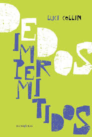

Dedos Impermitidos

Sobre a obra
“Luci Collin vem construindo uma obra vasta e intensa nos últimos anos, sobretudo no vigor poético da sua prosa. Não quero com isso sugerir uma dicotomia simples entre prosa e poesia; mas, em sua escrita múltipla, Collin de fato tem uma voz razoavelmente unificada e estável nos versos, ao passo que na prosa realiza uma verdadeira explosão de modos, ritmos, tons, personas, que vão construindo a cada peça toda uma nova história da linguagem possível e impossível. É como se seus versos fossem uma faceta possível em seu leque amplo, dentre as muitas que na prosa podemos ver mais facilmente. Isso é um verdadeiro tour de force das potencialidades na escrita, ainda mais num país que historicamente aposta tanto em certo estilo jornalístico e insosso atrelado a um realismo triste do terceiro mundo. Collin parece recusar qualquer uso de uma linguagem pré-fabricada, bem como as noções caducas de realismo.
Para se ter uma ideia disso, basta comparar os primeiros contos desta nova coleção como amostra da paleta: “Intro-” se desenvolve pelo coloquial quase-falado da narração em primeira pessoa, que conta em deriva uma tentativa fracassada de comprar um sofá no shopping; “Florilégio” se volta para a narrativa em terceira pessoa, numa descrição incômoda da vida como monstruosidades compiláveis e intermináveis dispostas em herança, a partir da vida de uma mulher; já “Da capo” parece um poema em prosa, com sintaxe longa, subordinadas angulosas e vozes entremeadas quase sem pontuação, numa pequena selva barroca em forma musical. Essa vertigem vai se desdobrar ao longo de todos os contos destes Dedos impermitidos, porque cada um deles é uma vida única, ou um conjunto complexo de vidas atravessadas como linguagem, levando ao extremo a ideia de polifonia tal como a encontramos em Bakhtin, num só gesto que abraça o riso e o trágico, como no esfacelamento amoroso de “Sol pertencente”, o banal e o absurdo nos vários narradores da vida de Jonathan Swift em “O deão não rasteja”, ou a complexa sobreposição de camadas do belo “Divinatório”.
Mas isso não tem o menor gosto de comprovação teórica; pelo contrário, Luci Collin expressa um olhar muito atento ao mundo em volta, seja para recontá-lo, seja para recriá-lo. Isso tudo com sua devida abertura ao inacabado, como podemos depreender das palavras do narrador de “Absoluta depuração” último conto do livro: “Ainda faltará falar de muitas coisas. Tudo é alusivo”. Sim, alusivo e misturado, como quem renova a receita a partir de ingredientes conhecidos. “Nunca fui de inventar prato novo. Conferi os itens na despensa.” Essa conferida refinada, essa mistura inusitada é prato mais que necessário de Collin: frescor de língua viva e que demanda relações.”
Guilherme Gontijo Flores
Dados da edição
- Editora
- Iluminuras
- ISBN
- 9786555190885
- Páginas
- 120
- Lançamento da edição
- Não informado na fonte
Fonte
As informações foram copiadas e coladas do site da editora: Iluminuras.